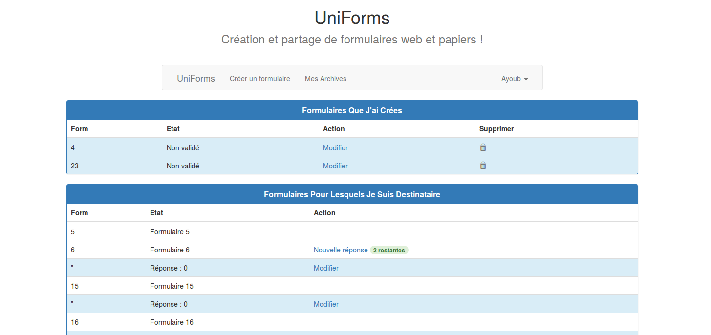

suivant:
La barre d'options
monter:
Fenêtre principale
précédent:
Autres utilisateurs
Table des matières
Page d'accueil
Après authentification, la page figure
s'affiche. On peut noter trois zones principales, une barre d'option, une zone de formulaires créés, une zone de formulaires à répondre.
 figurePage d'accueil
Sous-sections
La barre d'options
Zone de formulaires créés
Les formulaires validés
Les formulaires non validés
Zone de formulaires reçus
zz 2015-03-04